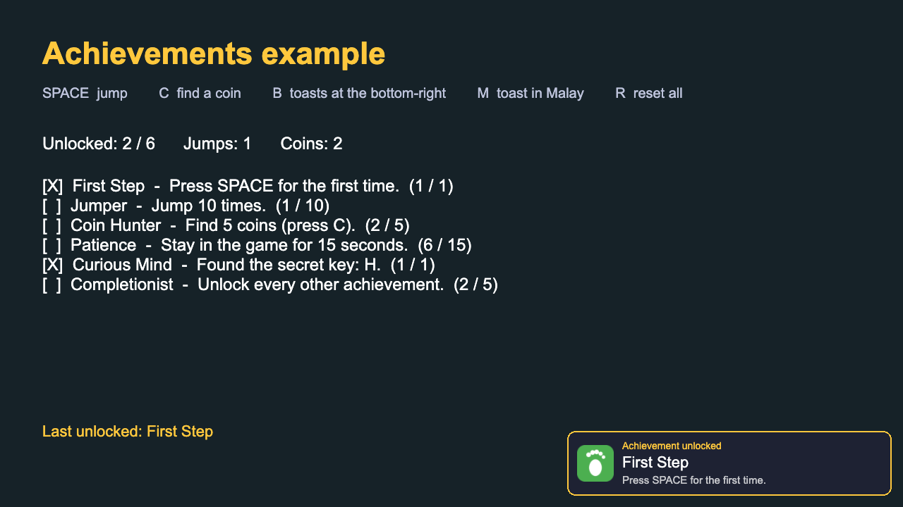
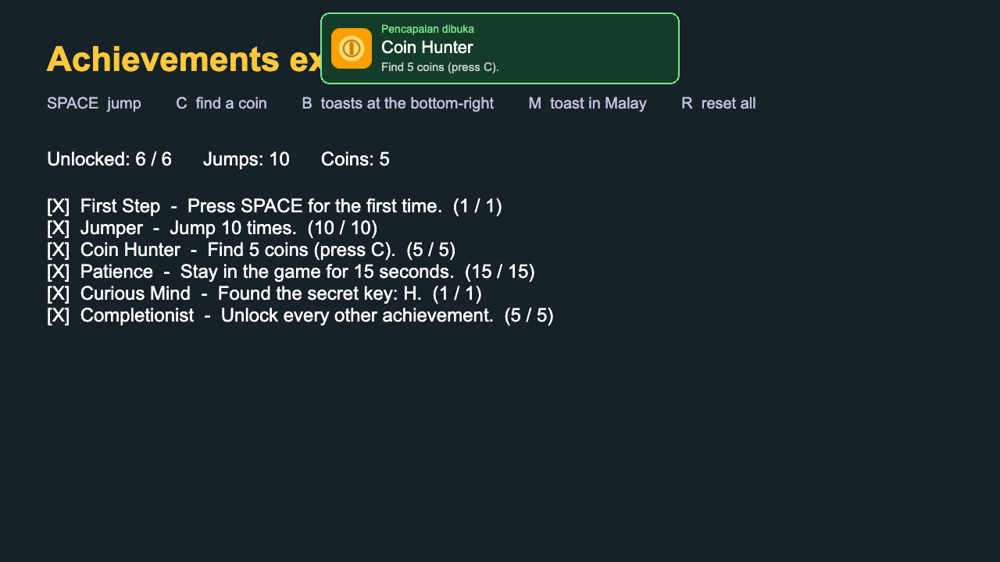

Get Started
- In GDevelop, open the extension store (Project Manager › Extensions), search Achievements and install it.
- At the beginning of your first scene, define each achievement once:
Define achievement "coin_hunter": "Coin Hunter" (goal: 5)
The identifier is how your events refer to it. Use a goal of 1 for an achievement that unlocks in one go. - Unlock it in one go: Unlock achievement "first_step"
or add progress, and it unlocks when the progress reaches the goal: Add 1 to the progress of achievement "coin_hunter" - Optional: react to it with the condition Achievement "coin_hunter" was just unlocked: play a sound, give a reward. It is true for one frame only.
Use Set progress for numbers you already keep, like the best score or the level reached: Set the progress of achievement "high_score" to BestScore.
The Toast
A toast slides in when an achievement is unlocked. It needs no object in your scene: the extension draws it on its own layer, above everything else, in 2D and 3D games. When several achievements unlock together, their toasts are shown one after another.
- Icon: Use image coin.png as the icon of achievement "coin_hunter". Without an icon, the toast shows a star.
- Sound: Play unlock.ogg (volume: 70) when a toast appears
- Position: top, bottom, or one of the four corners. Duration in seconds. Colors: background, text, and the accent used for the border, star and label.
- Label: the small text above the title, “Achievement unlocked” by default. Change it to translate the toast.
- Show toasts: no turns the toast off, to show your own instead with “Any achievement was just unlocked”.

Secret Achievements
Make achievement "curious" secret: yes hides its title and description until it is unlocked: the expressions Title and Description give “Secret achievement” and “???” instead (change these with Secret achievement text). The toast shows the real title when it unlocks.
An Achievements Screen
Build your own list with a Repeat event: repeat Achievements::Count() times, and for each position i (a variable from 0), Achievements::IdAt(i) gives the identifier. Use it with Title, Description, Progress, Goal, ProgressPercent for a progress bar, and the condition Achievement is unlocked. The example project has a complete one.
Saving
Progress is saved on the player's device as soon as it changes, in the browser's local storage, under a key with your game's name. It works in web, desktop and mobile exports. Definitions (titles, goals) are not saved: they come from your events every time the game starts, so you can change them in an update. If you make a goal smaller, players who already reached it get the achievement.
Achievements are local to the device: they are not linked to Steam, Game Jolt or another platform. Reset all achievements erases them, which is handy for a “reset progress” button and while testing.
Reference
Every action, condition and expression, as you find them in GDevelop. Highlighted parts are what you fill in.
Setup
| Action | Define an achievement Define achievement Achievement identifier: Title (goal: Goal)Define an achievement: its title, description and goal. Do this at the start of the first scene, before unlocking anything. Use a goal of 1 for an achievement that unlocks in one go, or a bigger goal (like 10) for one that unlocks when its progress reaches it. Progress is saved on the player's device.
|
| Action | Make an achievement secret Make achievement Achievement identifier secret: SecretMake an achievement secret (or not): until it is unlocked, its title and description are hidden. The toast shows the real title when it is unlocked.
|
| Action | Achievement icon Use image Image as the icon of achievement Achievement identifierUse an image as the icon of an achievement. It is shown in the toast instead of the star. A square image works best.
|
| Action | Secret achievement text Show Title and Description for locked secret achievementsChange the title and description shown for secret achievements that are still locked (“Secret achievement” and “???” by default).
|
| Action | Reset an achievement Reset achievement Achievement identifierLock an achievement again and set its progress back to 0.
|
| Action | Reset all achievements Reset all achievementsLock every achievement again and erase all saved progress. Useful for a “reset progress” button or while testing. |
Unlock and Progress
| Action | Unlock an achievement Unlock achievement Achievement identifierUnlock an achievement now. Nothing happens if it is already unlocked.
|
| Action | Add progress to an achievement Add Amount to add to the progress of achievement Achievement identifierAdd to an achievement's progress. It unlocks when the progress reaches its goal.
|
| Action | Set the progress of an achievement Set the progress of achievement Achievement identifier to ProgressSet an achievement's progress to a value (for example the best score or the level reached). It unlocks when the progress reaches its goal. Progress never goes down once the achievement is unlocked.
|
| Condition | Achievement is unlocked Achievement Achievement identifier is unlockedCheck if an achievement is unlocked.
|
| Condition | Achievement was just unlocked Achievement Achievement identifier was just unlockedCheck if an achievement was just unlocked. This is true for one frame only: use it to play a sound or give a reward.
|
| Condition | Any achievement was just unlocked Any achievement was just unlockedCheck if any achievement was just unlocked. This is true for one frame only. The expression LastUnlocked() tells which one. |
Information
| Expression | Progress Achievements::Progress(Id)The progress of an achievement (0 up to its goal).
|
| Expression | Goal Achievements::Goal(Id)The goal of an achievement.
|
| Expression | Progress in percent Achievements::ProgressPercent(Id)The progress of an achievement in percent (0 to 100). Handy for progress bars.
|
| Expression | Number of achievements Achievements::Count()The number of achievements defined. |
| Expression | Number of unlocked achievements Achievements::UnlockedCount()The number of defined achievements that are unlocked. |
| Text expression | Achievement identifier by position Achievements::IdAt(Index)The identifier of the achievement at a position (0 is the first one defined). Use it with a Repeat event to build an achievements screen.
|
| Text expression | Title Achievements::Title(Id)The title of an achievement. A secret achievement that is still locked gives the secret title instead.
|
| Text expression | Description Achievements::Description(Id)The description of an achievement. A secret achievement that is still locked gives the secret description instead.
|
| Text expression | Icon Achievements::Icon(Id)The name of the image resource used as the icon of an achievement (empty if it has none).
|
| Condition | Achievement is secret Achievement Achievement identifier is secretCheck if an achievement is secret.
|
| Text expression | Last unlocked achievement Achievements::LastUnlocked()The identifier of the achievement unlocked most recently in this game session. |
Toast
| Action | Show toasts Show a toast when an achievement is unlocked: Show toastsShow (or hide) the pop-up that slides in when an achievement is unlocked. It is shown by default.
|
| Action | Toast position Show toasts at the Position of the screenChange where the toast appears on the screen.
|
| Action | Toast duration Show toasts for Duration secondsChange how long the toast stays on screen.
|
| Action | Toast colors Toast colors: background Background color, text Text color, accent Accent colorChange the colors of the toast.
|
| Action | Toast label Toast label: LabelChange the small label above the title (“Achievement unlocked” by default). Use it to translate the toast, for example “Pencapaian dibuka”.
|
| Action | Toast sound Play Sound (volume: Volume) when a toast appearsPlay a sound when a toast appears. Leave the sound empty for no sound.
|
| Action | Show the toast of an achievement Show the toast of achievement Achievement identifierShow the toast of an achievement without unlocking it. Useful to preview the toast's look.
|
Example and Source
Download the example project (open Achievements Example.json in GDevelop). The source, tests and issue tracker are on GitHub.